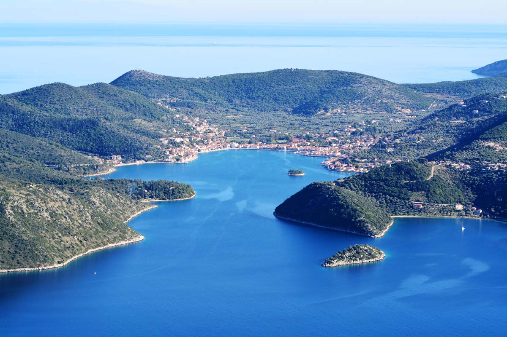
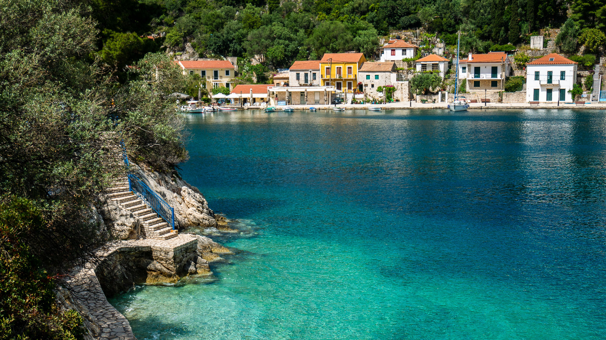
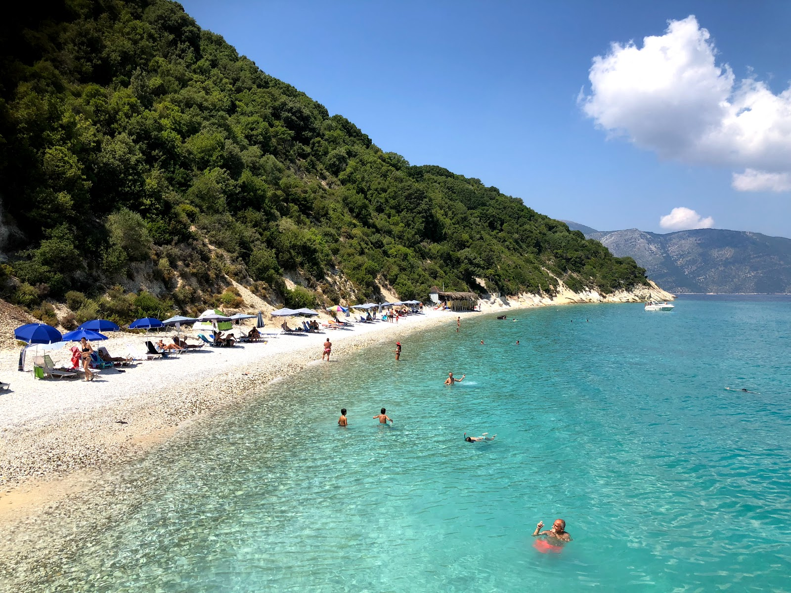
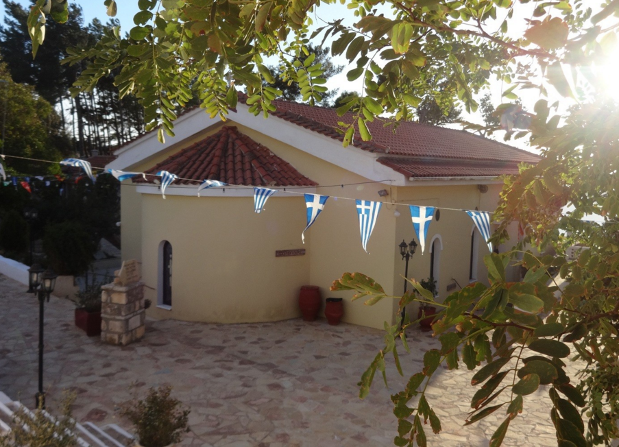
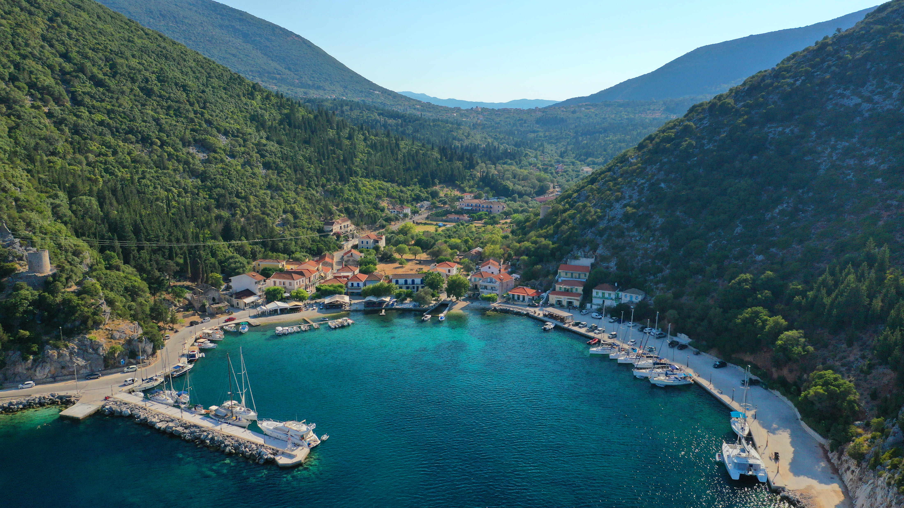

Inselhauptstadt
Vathy & die Bucht von Molos

Fischerdorf & Geheimtipp
Das malerische Dorf Kioni

Naturparadies
Der paradiesische Gidaki Strand

Kultur & Aussicht
Kathara Kloster (Panagia)

Bergdorf & Naturmonumente
Anogi & die Monolithen

Hafendorf & Windmühlen